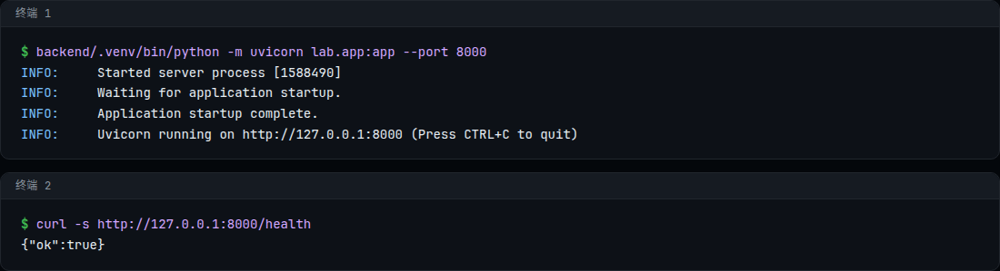

练本 · 阅读版（md 正典派生，改内容请改 manual/page-03.md）
第 3 页 · 让服务在 8000 端口回答问题
这一页构建什么
一个你自己的 HTTP 服务：跑在 8000 端口，只有一个接口 GET /health。用 curl 一问，它回 {"ok":true}。
这是整套系统第一次对外说话。
猜一猜
动手前把答案写在纸上（猜错很正常，后面要对着真实输出对账）：
- 敲完启动命令，这个终端会退回给你继续敲字，还是一直卡住？
- 再另开一个终端敲
curl -s http://127.0.0.1:8000/health，屏幕上会出现哪一行？
动手
先备环境：没有 backend/.venv 的话先回第 0 页跑 make install。
仓库根执行：所有命令都在仓库根目录敲（ls 能看到 backend、fixtures 的那一层）。
不装新东西：Python 用仓库里现成的 backend/.venv/bin/python，它已经装好 fastapi 和 uvicorn，不要再用 pip 装新东西。
- 在仓库根目录新建文件夹
lab，在lab里新建文件app.py，把下面整段粘贴进去（口语常说“粘进去”）、保存：
# lab/app.py —— 你的第一个 HTTP 服务
from fastapi import FastAPI
app = FastAPI()
@app.get("/health")
def health():
return {"ok": True}
- 在终端 1 敲：
backend/.venv/bin/python -m uvicorn lab.app:app --port 8000
端口被占：如果报 ERROR: [Errno 98] error while attempting to bind on address ('127.0.0.1', 8000): address already in use，说明 8000 被别的程序占了。
换端口：把命令里的 --port 8000 改成 --port 8010（或别的空闲端口），后面第 4–9 页里写 8000 的地方全部同步改成这个端口。
- 终端 1 别关。另开一个终端（终端 2；在 VS Code 里点终端面板右上角的
+），敲：
curl -s http://127.0.0.1:8000/health
你应该看到
终端 1：
INFO: Started server process [55698]
INFO: Waiting for application startup.
INFO: Application startup complete.
INFO: Uvicorn running on http://127.0.0.1:8000 (Press CTRL+C to quit)
访问日志：服务起来后，终端 1 还会接着打印访问日志：终端 2 每 curl 一次，它就多一行，格式 INFO: 127.0.0.1:<端口> - "GET /health HTTP/1.1" 200 OK。
正常现象：这是终端 2 的请求打进来的，正常，说明请求真的到了服务；<端口> 是这次连接的临时端口，每次都不一样。
终端 2：
{"ok":true}
curl -s 的输出没有结尾换行，所以 {"ok":true} 后面可能紧贴着你的终端提示符（$ 或 %），这是正常的，不是少东西。
版本差异：Waiting for application startup. 这行在有些版本里出现、有些版本里不出现，出现也不影响结果；方括号里的 55698 是进程号，每次都不一样。
判据就两条：只需确认启动日志里有一行以 Uvicorn running on http://127.0.0.1:8000 开头，并且终端 2 出 {"ok":true}。这一页做完先别关终端 1——第 4、5 页还要连这个服务；全部做完再按 Ctrl+C。

对账
- 你猜终端会退回吗？不会。到
Uvicorn running on ...这行就不动了——它在值班等请求，直到你按 Ctrl+C。这就是“服务”和“跑完就退的脚本”的区别。 - 你猜 curl 会看到什么？
{"ok":true}是服务端返回的 JSON，不是网页。ok这个字段名、/health这个路径都是你在代码里自己起的，没有标准答案；只要代码里的路径和 curl 里的路径一致，它就能通。 - 如果 curl 报
Connection refused：服务没起来（= 没启动，口语常说“起服务”），或者你敲的端口不是8000。 - 如果启动命令报
ModuleNotFoundError: No module named 'lab'（后面跟着一大段 traceback）：你没站在仓库根目录，或者lab文件夹名拼错了。 - 如果报
ERROR: Error loading ASGI app. Could not import module "lab.app".（uvicorn 版本不同时，同义报错可能只到Could not import module "lab.app"这半句）：lab文件夹在，但里面app.py的文件名拼错了，比如建成了lab/app.py.py。 - 404 不是你的错：终端 1 里出现你没请求过的路径、而且回 404，例如
INFO: 127.0.0.1:40196 - "GET /v1/models HTTP/1.1" 404 Not Found。- 来源：这是本机别的程序在探测
8000端口（把它当成了 AI 服务），不是你的代码错，不影响/health，忽略即可。 - 嫌吵就换端口：启动命令加
--port 8010，curl的地址也改成8010，但后面第 4–9 页里写8000的地方要一起改。
- 来源：这是本机别的程序在探测
你现在拥有：一个在 8000 端口值班、能回 JSON 的 HTTP 服务；它是浏览器和数据库之间唯一会说话的东西。
自己改一下
把 @app.get("/health") 改成 @app.get("/healthz")，Ctrl+C 重启服务，再 curl -s http://127.0.0.1:8000/healthz。旧的 /health 现在通吗？
参考：/healthz 回 {"ok":true}；旧 /health 回 {"detail":"Not Found"}，HTTP 状态码 404。
看状态码：想看到 HTTP 状态码，用 curl -i 或 curl -w '%{http_code}'——-s 只给响应体，404 看不出来。